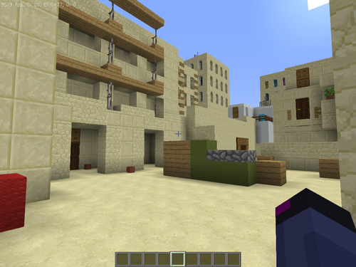

Minecraft Mod 1.16.5 Скачать
Мод был создан в Mcreator. Перестал делать мод из-за ограничения приложения
Sandstone map 1.12.2 Скачать

Карта из игры Standoff2. Всё делал в ручную. Есть пару моментов где геометрия карты ломается
Заброгорь map 1.16.5 Скачать
Моя любимая карты, где я со своим другом строили карту для мини игр
Cs Office map 1.16.5 Скачать
Перенос карты Office с cs 1.6 в майнкрафт
Все скины которые я носил